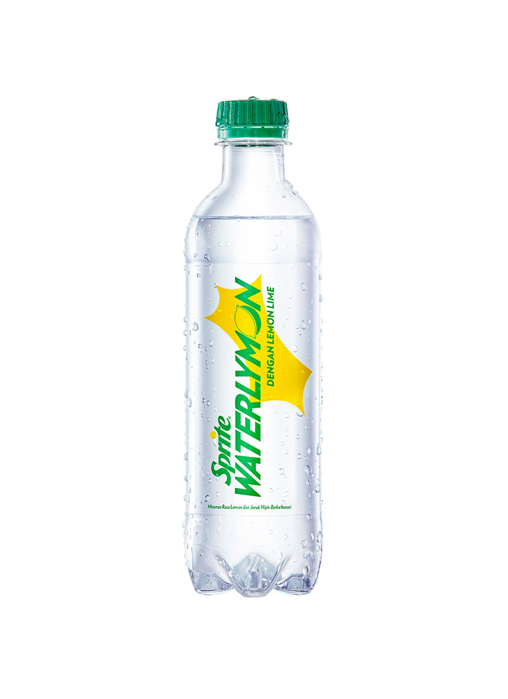
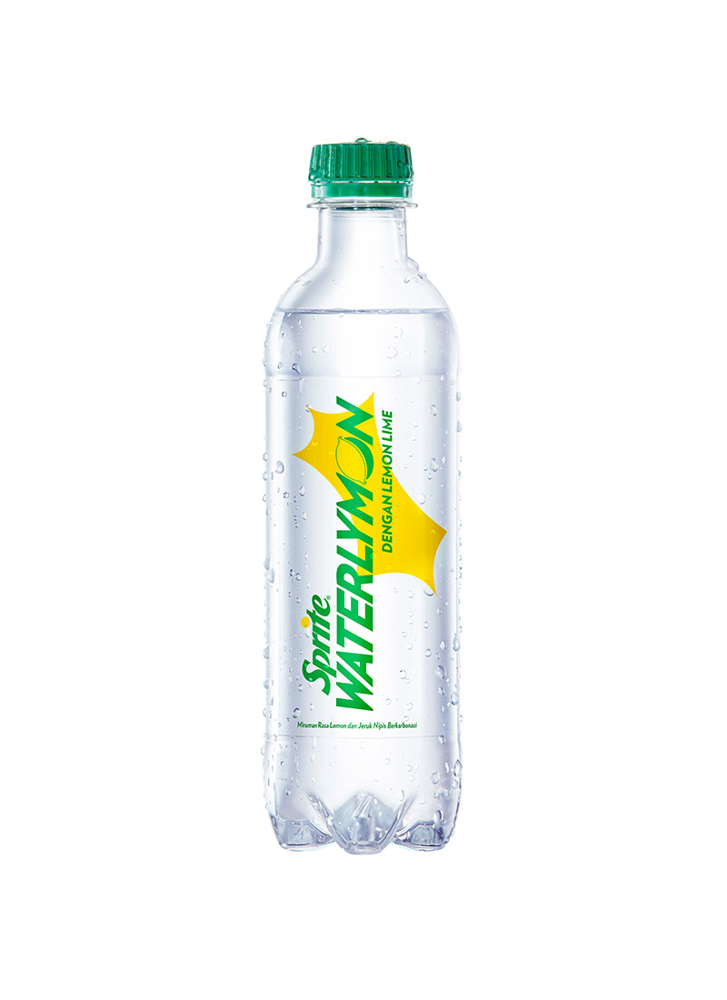

- Boy With Luv
- HOME
- |
- MY FAVORITE
- |
- VISITOR FORM
Favorite Movies

Mission: Impossible - Dead Reckoning Part One (2023)
Mission: Impossible – Dead Reckoning Part One is a 2023 American spy film directed by Christopher McQuarrie and produced by Tom Cruise and Christopher McQuarrie. The film script was written by Christopher McQuarrie based on the television series Mission: Impossible by Bruce Geller.
Sinopsis: Ethan Hunt and the IMF team must track down a terrifying new weapon that threatens all of humanity if it falls into the wrong hands. With control of the future and the fate of the world at stake, a deadly race around the globe begins. Confronted by a mysterious, all-powerful enemy, Ethan is forced to consider that nothing can matter more than the mission -- not even the lives of those he cares about most.

The Moon (2023)
The Moon is a new film which is also a reunion between D.O. EXO with director Kim Yong-hwa. Previously, they collaborated on two films Along with the Gods, Two Worlds (2017) and The Last 49 Days (2018).
Sinopsis: In 2029, Korea's lunar probe Woori embarks on a historic journey to the moon, capturing global attention. Despite the mission's worldwide recognition, a sudden solar wind from a sunspot explosion strikes the probe, leaving Hwang Sun-woo isolated and adrift. Former Center Head Kim Jae-guk, who stepped down five years ago after the Narae incident, and NASA's General Director of manned lunar orbiter Yoon Moon-yeong are assigned to ensure his safe return. However, the path to bringing Sun-woo home is filled with challenges and obstacles. Undeterred, Jae-guk stakes everything, determined never to lose anyone again.
Elemental: Forces of Nature (2023)
Disney and Pixar's "Elemental", a new film is set in Elemental City where the inhabitants of Fire, Water, Land and Air live and live together. The film introduces Ember, a tough, intelligent, and fiery young woman. Ember's friendship with a fun, sentimental, go-with-the-flow guy named Wade will challenge her beliefs about the world in which they live.
Favorite Songs

Angel Pt. 2 - JVKE, Jimin of BTS, Charlie Puth, Muni Long

Kelana - TULUS

Wild Dreams - Westlife

Like Crazy - Jimin
Favorite Food and Drink

 

The pictures above are some of my favorite foods and drinks. For food, I like satay, fried chicken and pempek Palembang. And for drinks I like Starbucks and sprite lemon water the most.
--- 000 ---